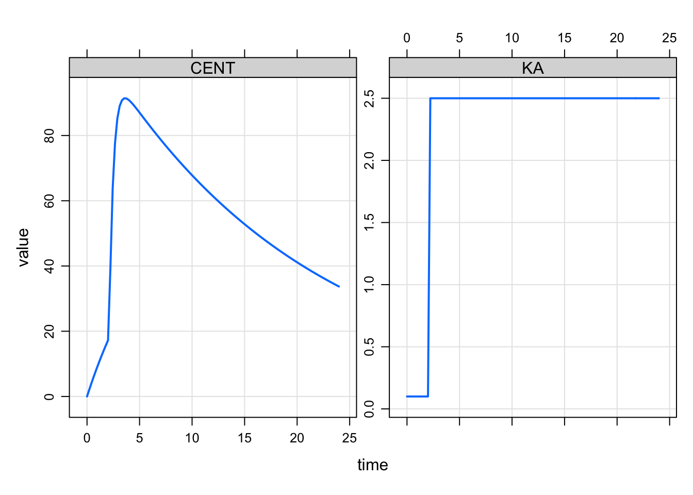
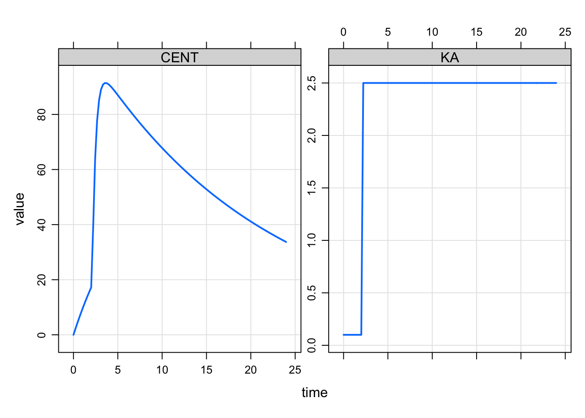

library(mrgsolve)
options(mrgsolve.soloc = "build")
mod <- mread_cache("mtime_model.txt")
mod %>% ev(amt=100) %>% mrgsim(delta = 0.222) %>% plot(CENT+KA~time)
This is just a post on a simplified implementation of modeled events in mrgsolve. There is also another, more complete blog post on this topic published previously
This is just a short post on a simplified implementation of modeled events in mrgsolve.
I previously posted here about modeling interventions in mrgsolve. All that still works fine. But I found myself wanting a more straightforward implementation of the mtime functionality you get in NONMEM.
For example, we might wish a rate constant to change at some time that is not found in a record in the input data set. We can make this happen from the model code itself. In addition to using mevent you can now use mtime to make this happen. mtime is just a simpler subset of the mevent functionality.
Let’s make KA change at 2.1 hours (change_t parameter in the example below). ::: {.cell}
[ param ]
CL = 1, V = 20, KA1 = 0.1, KA2 = 2.5, change_t = 2.1
[ pkmodel ]
cmt = "GUT,CENT", depot = TRUE
[ main ]
double mt = self.mtime(change_t);
capture KA = KA1;
if(TIME > mt) KA = KA2;
if(TIME == change_t) {
mrg::report("wait a minute ... time is 2.1?");
}:::
Again, the main motivation for this is just convenience and economy of code: we register the event time and get that time returned into a variable that we can reference later on, checking if we are past that time or not.
library(mrgsolve)
options(mrgsolve.soloc = "build")
mod <- mread_cache("mtime_model.txt")
mod %>% ev(amt=100) %>% mrgsim(delta = 0.222) %>% plot(CENT+KA~time)
You won’t see the message that we actually stumbled on 2.1 hours in the simulation even though it was not in the lineup when the simulation started.
We could keep track of several mtimes like this
[ set ] end=8, delta=0.1
[ param ]
CL = 1, V = 20, KA1 = 0.1, KA2 = 0.5, KA3 = 5, change_t = 1
[ pkmodel ]
cmt = "GUT,CENT", depot = TRUE
[ main ]
double mt = self.mtime(change_t);
double mt2 = self.mtime(change_t + 1);
capture KA = KA1;
if(TIME > mt) KA = KA2;
if(TIME > mt2) KA = KA3;mod <- mread_cache("mtime_model_2.txt")
mod %>% ev(amt=100) %>% mrgsim() %>% plot(CENT + KA ~ time)